Префектура Сидзуока · Сидзуока и Западный Идзу · маршрут
Два дня по «наследию Сидзуоки»: Фудзи с холма Нихондайра, вечер в городе и паром на Западный Идзу
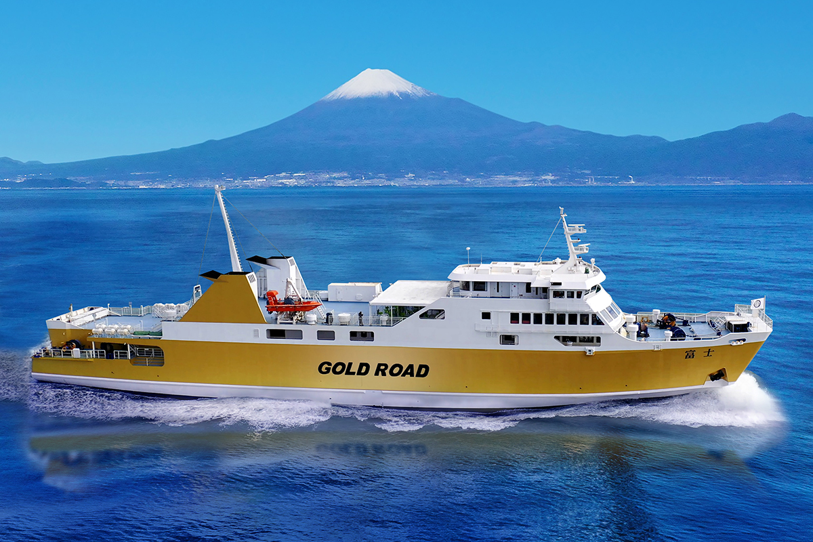
В префектуре Сидзуока самая высокая гора Японии стоит над самым глубоким заливом страны, а полуостров Идзу входит в список геопарков ЮНЕСКО. Этот маршрут на два дня ведёт по «наследию Сидзуоки», списку памятников префектуры, и связывает видовые точки, еду и архитектуру.
Маршрут
Что такое «наследие Сидзуоки»
«Наследием Сидзуоки» префектура называет свою систему отбора памятников: материальные и нематериальные ценности разных городов собраны в темы, чтобы о них узнало больше людей. Одна из тем называется «Исторический коридор, который тянется от Нихондайры», другая «Плоды страсти жителей Сидзуоки к новому образованию». Через такие темы префектура видна целиком, поверх границ отдельных городов.
Два дня этого маршрута соединяет паром через залив Суруга. Он ходит между портом Симидзу в городе Сидзуока и портом Той на западном берегу полуострова Идзу, три рейса в каждую сторону в день, поэтому многие заезжают на Западный Идзу заодно с Сидзуокой.
Примерный план выглядит так.
День первый
- 9:00 «Нихондайра Юмэ Тэрасу»: смотровая площадка с видом на Фудзи
- 10:30 перевал Сатта: Фудзи со смотровой точки над морем
- 11:30 обед в Сидзуоке
- 13:00 храм Рюгэдзи: отдых в главном зале с видом на Фудзи
- 15:30 прогулка по кварталу Хитоядо-тё
- 17:30 «Таку»: рыба из залива и местное сакэ
- 19:00 O'BAR: коктейли
- 21:00 заселение в The Villa & Barrel Lounge и пиво
День второй
- 7:40 паром из порта Симидзу
- 9:10 прибытие в порт Той
- 10:00 музей мастера Тёхати: картины из штукатурки
- 11:30 бывшая школа Ивасина: как учились в эпоху Мэйдзи
- 13:00 обед в Мацудзаки
- 14:00 прогулка по улице домов под белой решёткой
- 18:00 закат над заливом у Догасимы
- 19:00 ужин из местной рыбы в «Идзу Мацудзаки-со»
День первый
Нихондайра: вид, который прославил журналист
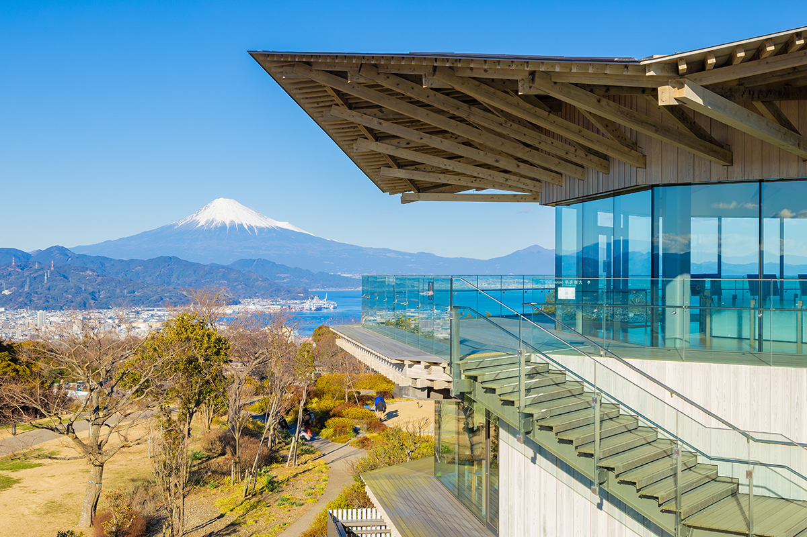
Нихондайра лежит почти в центре префектуры. Так называют вершину горы Удо высотой около 300 метров и всю местность вокруг. По преданию, имя пошло от легендарного принца Ямато Такэру: усмирив врагов в земле Суруга, он поднялся сюда и осмотрел страну на все четыре стороны. Здесь рисовали художники эпохи Эдо, сюда приезжали писатели эпохи Мэйдзи, и картина с тех пор почти не изменилась. На северо-востоке поднимается Фудзи, за заливом Суруга лежит полуостров Идзу, на западе раскинулась Сидзуока, а на юге виден мыс Омаэдзаки. Утром Фудзи горит в лучах солнца, вечером внизу зажигаются огни города.
Всеяпонскую славу этому виду принёс Сохо Токутоми (1863–1957), журналист, который писал с эпохи Мэйдзи до эпохи Сёва. Он приехал на Нихондайру в эпоху Тайсё (1912–1926) и восторженно описал панораму в путевых заметках. После этого Нихондайра стала известна по всей стране как место для «камбу», любования Фудзи.
Новая точка для такого любования это «Нихондайра Юмэ Тэрасу». Её построило бюро Кэнго Кумы, а образом послужил Юмэдоно, «Зал снов» храма Хорюдзи. По словам управляющей, смотреть стоит не только на Фудзи: и само здание, и сад, который разбил ландшафтный дизайнер, заслуживают внимания.
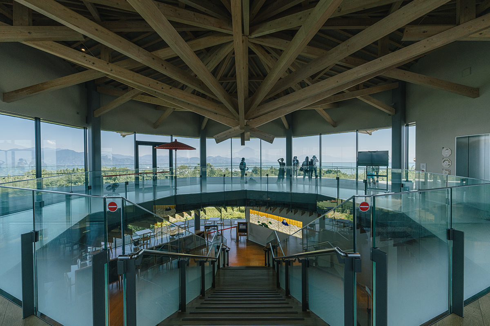
Вокруг здания идёт смотровая галерея длиной около 200 метров. Внутри есть небольшая выставка об истории и культуре Нихондайры и чайная, где наливают сидзуокский чай с местных плантаций.
«Нихондайра Юмэ Тэрасу»
- Адрес
- префектура Сидзуока, Сидзуока, район Симидзу, Кусанаги, 600-1
- Телефон
- +81 54-340-1172
- Часы работы
- 9:00–17:00, в субботу до 21:00
- Выходные
- второй вторник месяца (если это праздник, то следующий будний день)
- Цены / Вход
- бесплатно
Перевал Сатта: гравюра Хиросигэ наяву
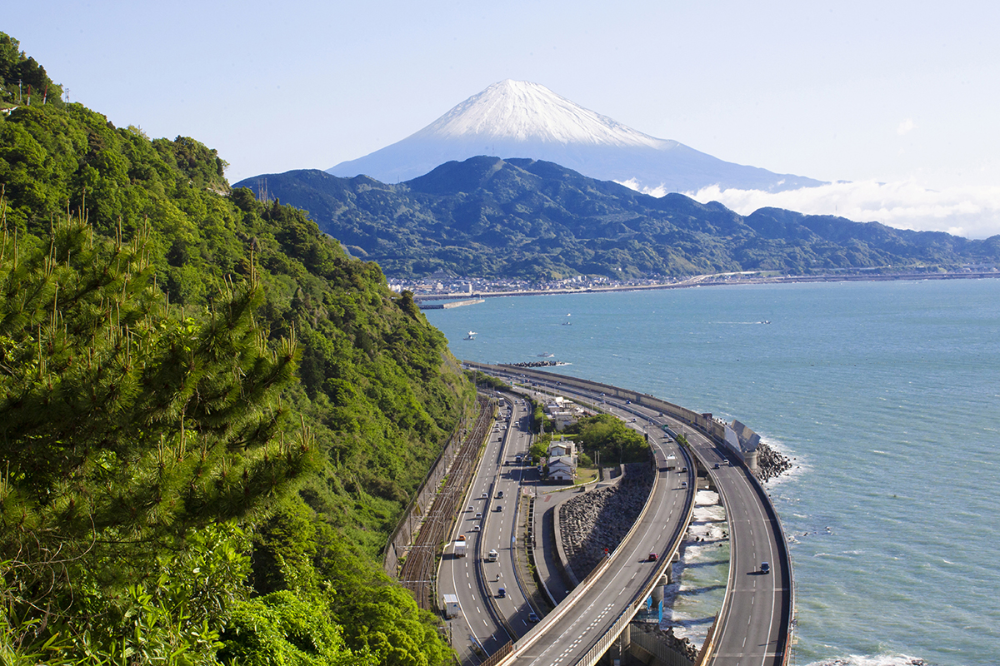
Перевал Сатта изобразил Хиросигэ Утагава (1797–1858), мастер гравюры эпохи Эдо, в серии «Пятьдесят три станции Токайдо», на листе о почтовой станции Юи. Залив и Фудзи, увиденные с обрыва, поражали путников во все времена. Дорогу через перевал, по рассказам, привели в порядок в 1655 году к приезду посольства из Кореи.
Перевал Сатта
- Адрес
- префектура Сидзуока, Сидзуока, район Симидзу, Юи-Нисикурасава
- Телефон
- +81 54-221-1071 (отдел развития спорта мэрии Сидзуоки)
- Сайт
- hellonavi.jp
Храм Рюгэдзи: чай под соломенной крышей
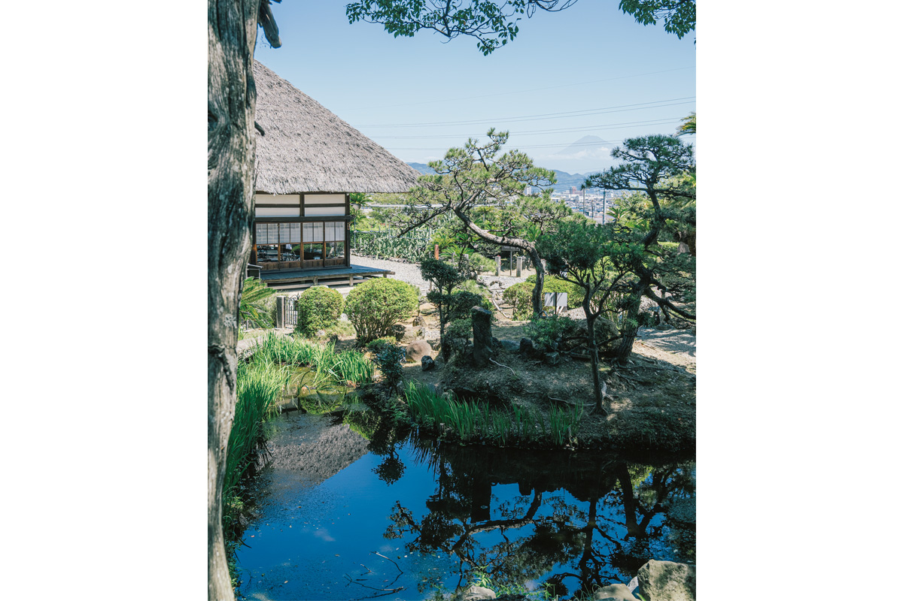
Храм Рюгэдзи основан в 1670 году. Его строительству щедро помогала Оман (1577–1653), наложница сёгуна Иэясу Токугавы (1543–1616), основателя династии сёгунов Токугава; она была матерью основателя ветви Токугава из Кии, поэтому храм издавна связан с этой ветвью. Отсюда тоже открывается вид на Фудзи. Здесь бывали писатели Сосэки Нацумэ (1867–1916) и Рюноскэ Акутагава (1892–1927), а на территории храма похоронен литератор Тёгю Такаяма (1871–1902).
Храм Рюгэдзи
- Адрес
- префектура Сидзуока, Сидзуока, район Симидзу, Мурамацу, 2085
- Телефон
- +81 54-334-2858
- Часы работы
- 8:30–16:30
- Выходные
- нет
- Цены / Вход
- 400 иен
- Сайт
- ryugeji.jp
Вечер
Сидзуока, которая меняется
К неизменным видам стоит добавить сегодняшнюю Сидзуоку. Первая остановка это квартал Хитоядо-тё недалеко от вокзала. В эпоху Эдо здесь шумела почтовая станция с постоялыми дворами, а к 2025 году многие старые лавки перестроили под новые заведения.
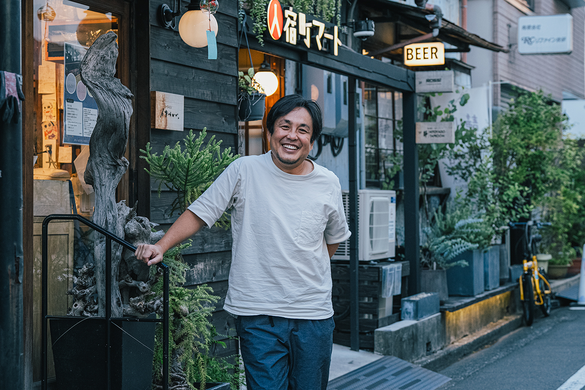
Здесь собрались места с человеческим теплом: ресторан японской кухни «Таку» в современном стиле, бар O'BAR, куда удобно зайти и перед ужином, и в конце вечера. Квартал возрождает компания «Содзося», которая перестроила больше 130 зданий.
«Мы не только проектируем заведения, но и стараемся приглашать те, что подходят району. Здесь много необычных и интересных мест, и сюда приезжают люди и из префектуры, и издалека»
глава компании «Содзося»
В двух станциях от вокзала Сидзуоки лежит порт Мотимунэ, известный ловом сирасу, мелкой рыбки. Здесь одно за другим открываются магазины и рестораны, а самое заметное место это гостиница с рестораном The Villa & Barrel Lounge при пивоварне, о которой мы подробно пишем в отдельной статье: в номерах стоит пивной кран, а прямо перед домом пляж и онсэн.
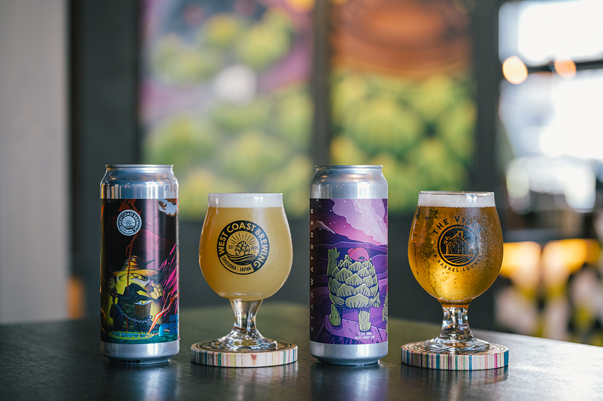
«Таку»: рыба из залива и местное сакэ
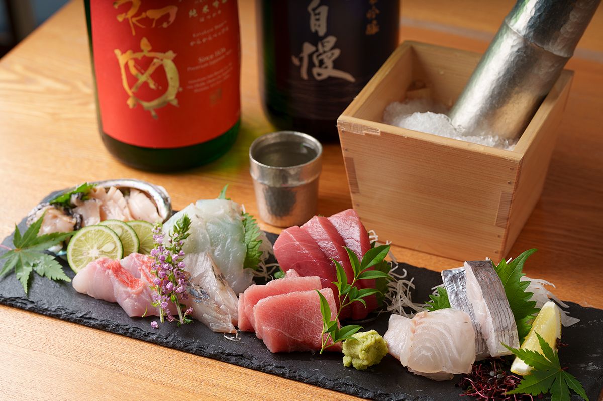
Рыбу и морепродукты сюда привозят из порта Огава в Яидзу, на берегу залива Суруга, а говядину берут местную, японской чёрной породы из Сидзуоки. Ресторан готовит японские блюда и мясо на тэппане, можно заказать и отдельные блюда, и полный ужин. Шеф вырос в семье, которая держала лапшичную, поэтому и его собственная соба пользуется спросом. Выбор напитков широкий: от сидзуокского сакэ до вина.
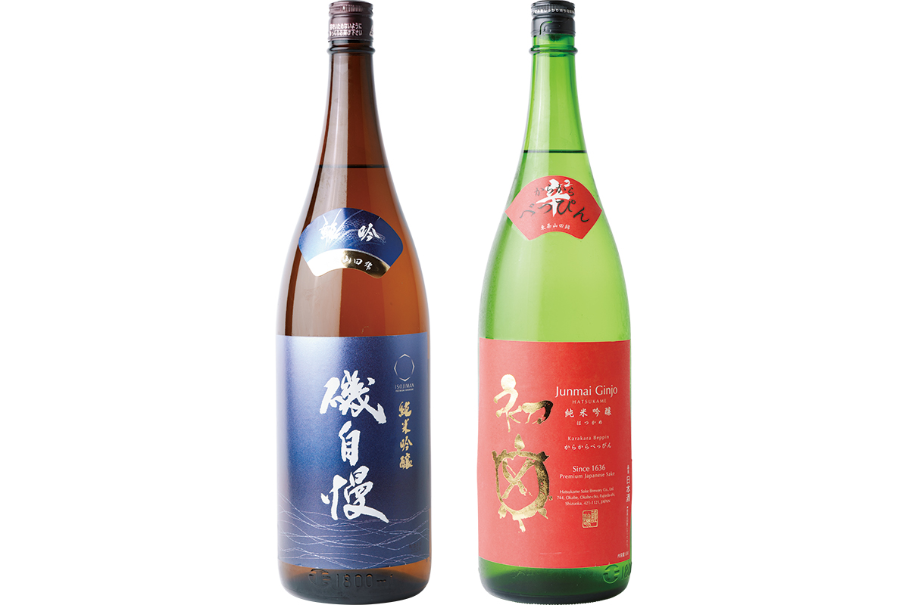
«Таку»
- Адрес
- префектура Сидзуока, Сидзуока, Ситикэн-тё, 16-7, здание omachibld., 2-й этаж
- Телефон
- +81 54-293-4151
- Часы работы
- 12:00–13:30 (последний заказ), 17:30–22:00 (последний заказ)
- Выходные
- понедельник, третий вторник месяца
O'BAR: новый вечер Сидзуоки
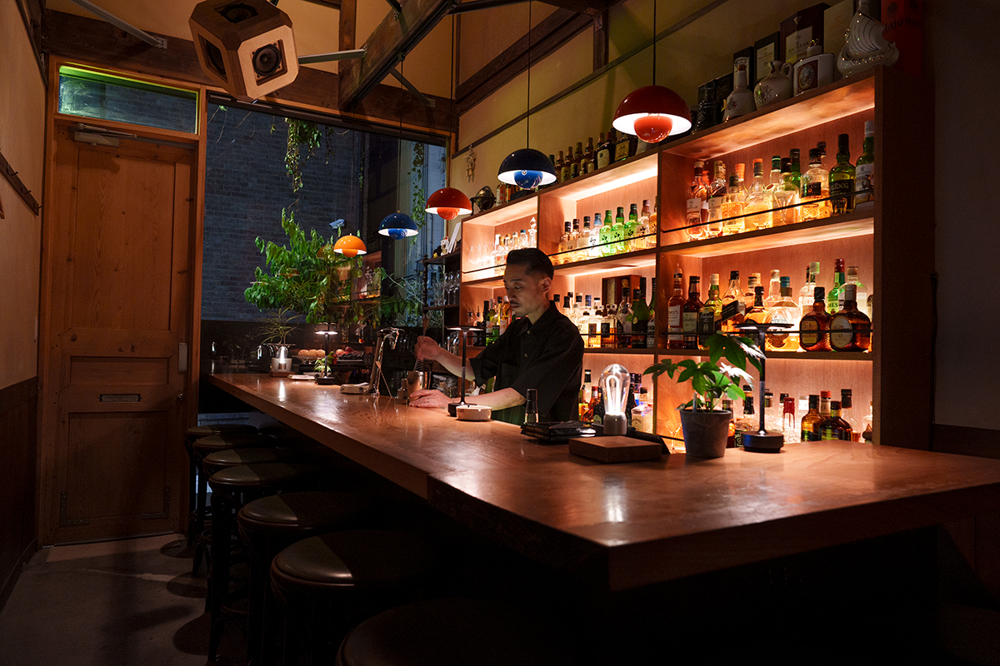
Бар открылся в марте 2025 года. Обстановка непринуждённая, а напитки серьёзные: классические рецепты и коктейли на сезонных фруктах. Стоит попробовать и виски, сделанный в Сидзуоке.
O'BAR
- Адрес
- префектура Сидзуока, Сидзуока, район Аой, Суруга-тё, 4-2
- Часы работы
- 19:00–2:00
- Выходные
- нерегулярно
День второй
Паром навстречу Фудзи
«Хочется увидеть Фудзи, чтобы ничто не мешало». Такую возможность даёт паром, который соединяет порты Симидзу и Той. Вскоре после отплытия почти все пассажиры выходят на палубу: прямо по курсу стоит Фудзи над тёмно-синим морем, и этот вид у всех вызывает восхищённые возгласы.
Путь через самый глубокий залив Японии занимает около 90 минут. Маршрут считается морским участком префектуральной дороги № 223: цифры 2, 2 и 3 по-японски можно прочитать как «фу-дзи-сан».
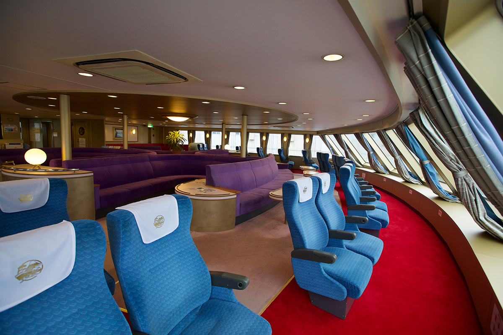
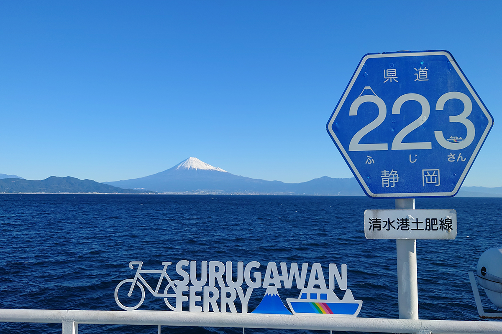
В кафе на борту кроме напитков продают свои сладости: джелато «Суруга-ван» и баумкухен «223 баум». Их берут и в дорогу, и в подарок.
Паром через залив Суруга
- Телефон
- +81 54-353-2229
- Цены / Вход
- 2 000 иен (пассажирский билет), на обратный путь скидка
- Сайт
- 223-ferry.or.jp
С 12 по 29 января 2027 года паром не ходит: судно встаёт в док на ремонт. Перед поездкой стоит проверить расписание на сайте.
Мацудзаки
Город мастера штукатурки
Из порта Той дорога идёт на юг вдоль берега с обрывами и причудливыми скалами, к городку Мацудзаки. Здесь никто никуда не торопится, а на каждом шагу встречаются дома с «намако-кабэ». Стены облицованы плоской черепицей, а швы между плитками заложены валиками белой штукатурки, выпуклыми, как спинка морского огурца, «намако».
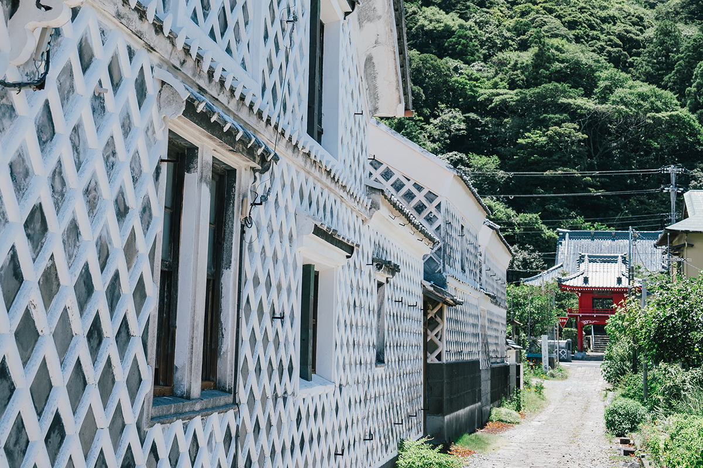
Такие стены хорошо защищают от огня и держат тепло и влагу, поэтому их строили богатые крестьяне и купцы, и они служили знаком достатка. В Мацудзаки сохранилось больше 170 таких построек эпохи Эдо и Мэйдзи, и городок до сих пор сохраняет старый облик.
«Ремесло штукатура, которое видно и в стенах намако, поднял до искусства Тёхати Ириэ, родившийся в Мацудзаки в конце эпохи Эдо. Его рельефы из штукатурки встречаются по всему городу, начиная с музея его имени»
сотрудница городской компании по развитию туризма Мацудзаки
Тёхати Ириэ (1815–1889) в 12 лет пошёл в ученики к штукатуру, а в 19 стал учиться живописи у художников школы Кано. Его называли лучшим штукатуром Японии, и свой мастерский шпатель он превратил в инструмент художника: цветные рельефы из штукатурки «котээ» стали самостоятельным искусством.
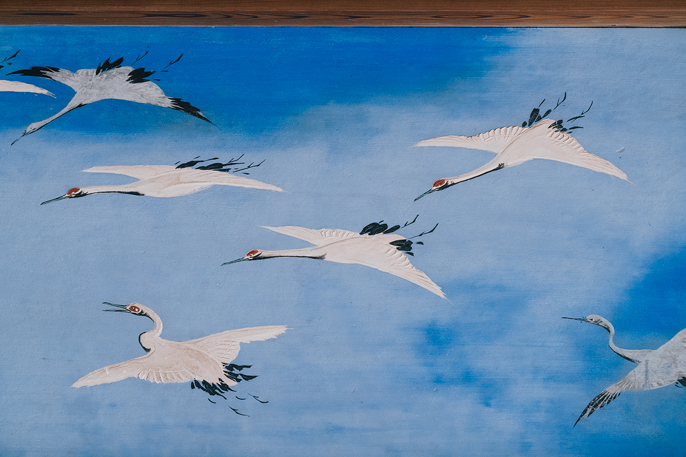
Музей Тёхати: дворец штукатурного искусства
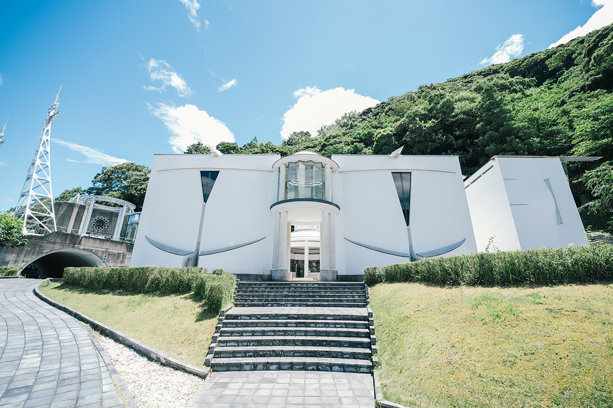
В музее собрано около 50 главных работ Тёхати. Рядом с ними хорошо видно, как ремесло, которым отделывали стены, превращается в тонкую живопись рельефом.
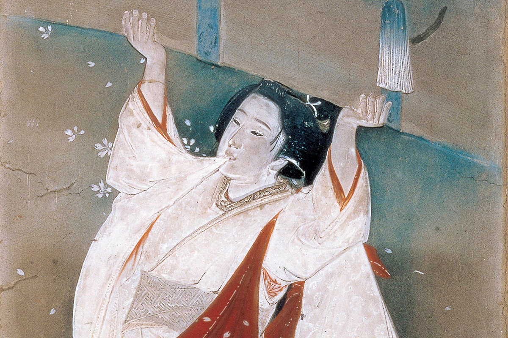
Музей Тёхати в Идзу
- Адрес
- префектура Сидзуока, уезд Камо, Мацудзаки, Мацудзаки, 23
- Телефон
- +81 558-42-2540
- Часы работы
- 9:00–17:00
- Выходные
- четверг (если это праздник, то предыдущий будний день), бывают внеплановые закрытия
- Цены / Вход
- 500 иен
Бывшая школа Ивасина: деревня, которая построила себе школу
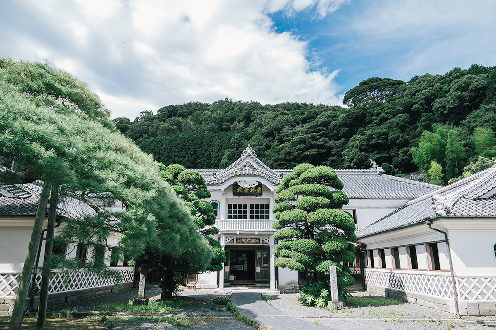
Начальную школу Ивасина построили в 1880 году, когда по стране шёл подъём народного образования, и деньги на неё собрали сами жители деревни. Здание соединяет японские стены намако и изогнутый фронтон «карахафу» с европейскими балконом и арочными окнами. Именно о ней тема «Плоды страсти жителей Сидзуоки к новому образованию»: в продуманных деталях здания чувствуется, сколько надежд деревня связывала с учёбой детей. В 1975 году здание признали важным культурным достоянием Японии, а рельефы Тёхати есть и здесь.
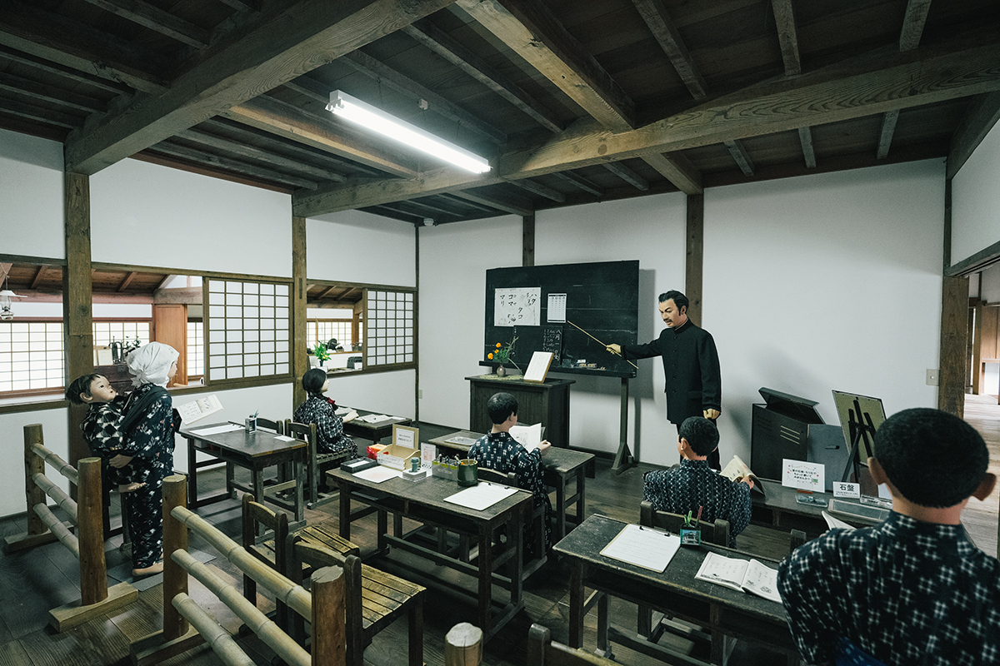
Бывшая школа Ивасина
- Адрес
- префектура Сидзуока, уезд Камо, Мацудзаки, Ивасина-Китагава, 442
- Телефон
- +81 558-42-2675
- Часы работы
- 9:00–17:00
- Выходные
- четверг (если это праздник, то предыдущий будний день), бывают внеплановые закрытия
- Цены / Вход
- 300 иен
Улица домов намако
- Адрес
- префектура Сидзуока, уезд Камо, Мацудзаки, Мацудзаки, 216
Закат
Догасима: символ геопарка Идзу
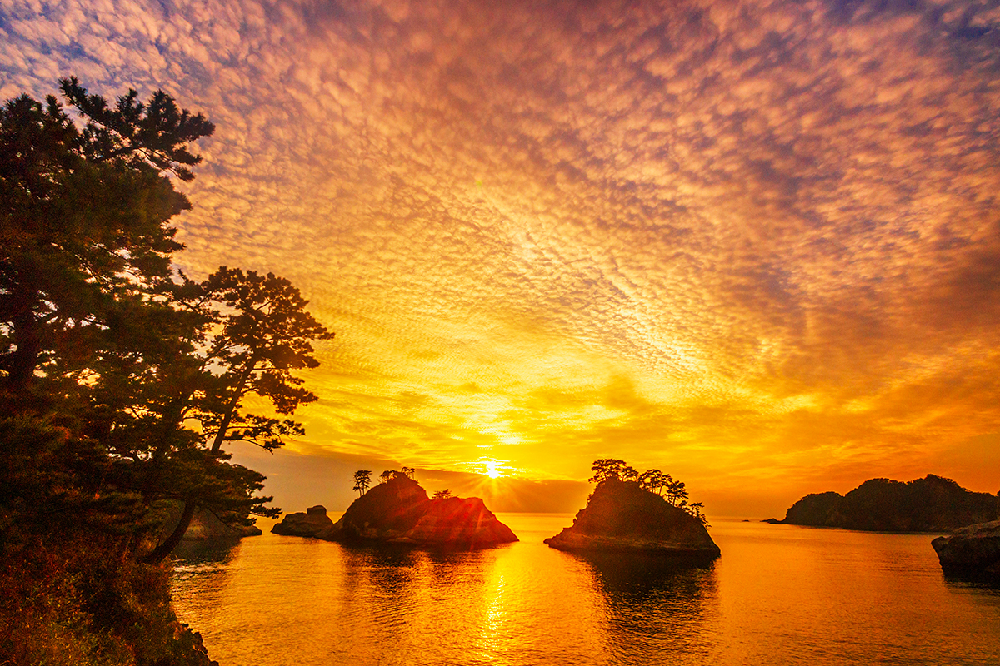
Изрезанный берег оставил у Догасимы россыпь островков и причудливых скал. Сансиро-дзима состоит из четырёх островов, и в отлив к ним можно пройти по обнажившейся песчаной косе. Из Догасимы отправляются прогулочные катера к гроту Тэнсодо с «окном» в своде, который охраняется государством как природный памятник. Осенью, когда над заливом стоят лёгкие облака, закат здесь особенно хорош.
Догасима
- Адрес
- префектура Сидзуока, уезд Камо, Ниси-Идзу, Нисина, 2910-2
- Телефон
- +81 558-52-1268 (ассоциация туризма Ниси-Идзу)
Ночлег
«Идзу Мацудзаки-со»: залив из окна
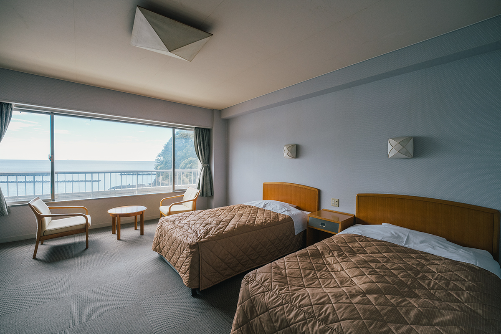
Из номеров и из купальни под открытым небом виден весь залив Суруга, а на открытой террасе у самого берега можно встречать закат на морском ветру. Гостиница устраивает и деревенские занятия в духе Мацудзаки: посадку и сбор риса на террасных полях, вечера со светлячками, приготовление рисовых лепёшек моти и праздник, когда их разбрасывают в толпу.
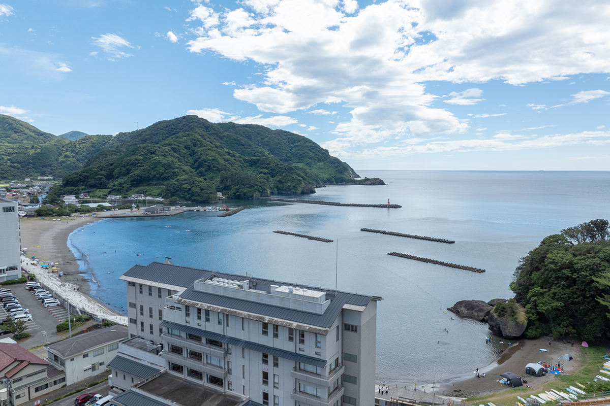
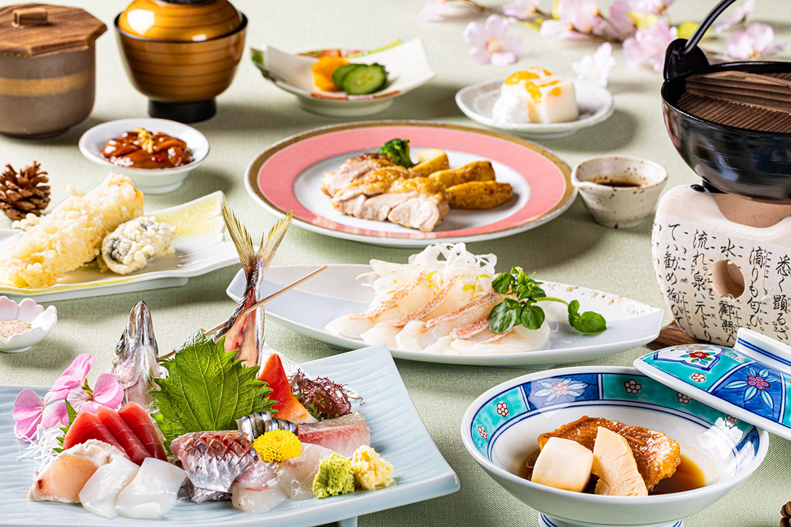
«Идзу Мацудзаки-со»
- Адрес
- префектура Сидзуока, уезд Камо, Мацудзаки, Эна, 210-1
- Телефон
- +81 558-42-0450
- Цены / Вход
- от 12 590 иен с двумя приёмами пищи на человека (с налогом и сервисным сбором)
Осенью 2025 года префектура провела по всей Сидзуоке ярмарку культурного наследия: особые показы памятников, лекции и выступления народных артистов. Но и без неё виды, еда и архитектура этого маршрута открывают Сидзуоку с неожиданной стороны.
Фото: Ацуси Ямахира.